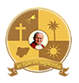
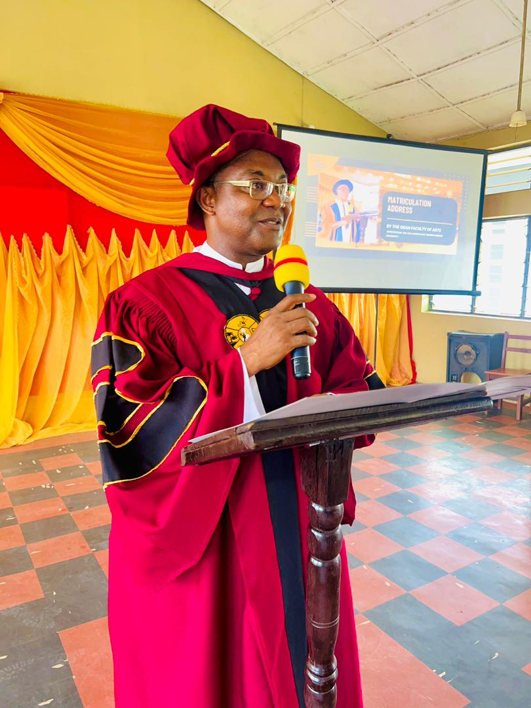

POPE JOHN PAUL II MAJOR SEMINARY
"WELCOME TO OUR WEBSITE!
This is the official Website for Pope John Paul II Major Seminary, Awka - Nigeria.
The Catholic Major Seminary was established in 1924, through the initiative
of Rt. Rev. Joseph Shanahan. PJPMS is located in Anambra State,
South-eastern part of Nigeria, and is situated within the Onitsha
Ecclesiastical Province. We do hope you enjoy your visit to our website."
October 21, 2025
February 20, 2025
April 24, 2023
November 28, 2025
October 25, 2025
October 21, 2025
On the 17th of November, 2023, Mother PJPMS journeyed with her seminarians, formators and Alumni to St. Paul's Seminary, Okpala, Imo State.
In continuation of the PJPMS Centenary activities, the PJPMS Family, on Thursday the 25th day of January, 2024, journied to Igbarim where PJPMS originally took off as St. Paul's Seminary in 1924.
PJPMS Seminary family visited Queen of Apostles Seminary, Afaha Obong on Friday, 26th April 2024 as part of the Centenary Celebration. The seminary sojourned here during the outbreak of the Nigerian Civil War.
Alumni
Students
Staff
Experience